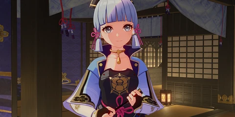

Inazuma · Quest Chronicles
The Immovable God and the Eternal Euthymia
The opening act of Inazuma’s Archon Quest brings the Traveler into a nation under the Sakoku and Vision Hunt Decrees, where three people’s stories reveal the cost of confiscating Visions.

The Voyage into Inazuma
The Immovable God and the Eternal Euthymia is Chapter II, Act I of the Archon Quest. After the Crux Fleet carries the Traveler from Liyue, the Sakoku Decree makes entry and movement through Inazuma difficult. On Ritou, the Traveler meets Thoma, who helps them navigate the inspection process and the restrictions imposed by the Kanjou Commission.
The opening shows Inazuma’s isolation through people’s daily lives, including the International Trade Association’s disputes with officials. Thoma’s role as a local fixer is later clarified: he serves the Kamisato Clan and the Yashiro Commission.
The Vision Hunt Decree in Public
On Narukami Island, the Traveler sees the Raiden Shogun preside over the confiscation of a Vision at the Statue of the Omnipresent God. Thoma explains the Shogun’s idea of eternity, but this first act does not reveal her full history or the deeper reason behind the decree.
The act links Visions with their holders’ ambitions and follows three people whose lives changed after losing theirs: Tejima, Kurosawa Kyounosuke, and swordmaster Domon. Their experiences differ, so the chapter does not establish one identical effect for everyone whose Vision is taken.
Ayaka’s Request and the Three Witnesses
Kamisato Ayaka asks the Traveler to help three people she knows, using their stories to show what the decree costs beyond the formal confiscation ceremony. Tejima has lost memories connected to the reason he waited in Konda Village; Kurosawa is suspected of withholding aid, but the Traveler learns what happened to the provisions; Domon struggles with the loss of the ambition that had shaped his life.
Yae Miko appears during Domon’s story and rejects the claim that he is possessed, instead describing a collapse under pressure after losing his Vision. Ayaka’s effort reduces immediate harm but does not restore the three Visions.
Master Masakatsu and a Small Resistance
Ayaka reveals herself to the Traveler after the three cases and asks for help resisting the Vision Hunt Decree. The group frees Master Masakatsu, who had supported the Yashiro Commission by making counterfeit Visions for people in danger. Yoimiya assists the rescue with her knowledge of the police station and fireworks; Kujou Sara’s intervention stops guards from torturing Masakatsu, though Sara remains a loyal enforcer of the decree.
The act ends with the Kamisato group planning its next steps. Ayaka notes that the decree remains in force and that the Watatsumi resistance is another, separate opponent of the Shogun’s policy. This chapter begins the conflict; later acts explain more of Ei’s history and the Shogun’s motives.
Where the Act Stops
The title pairs the Shogun’s immovable rule with her ideal of Euthymia, a stable and unchanging state. In this act, the Traveler encounters the policy’s effects and makes allies, but does not yet resolve the Vision Hunt Decree or explain the Raiden Shogun’s private history.
The act contains eight quests, from Setting Sail and Ritou Escape Plan through the three cases and A Flower Blooms in a Prison. Read it as the opening of the Inazuma chapter, followed by Stillness, the Sublimation of Shadow and Omnipresence Over Mortals for the later confrontation and revelations.
This is an original CoreGG reading guide, not an official HoYoverse article or a reproduction of the game text. Source links below identify the records used so you can check the original context.
Sources & references
Check these sources for the original game text and reference trail.